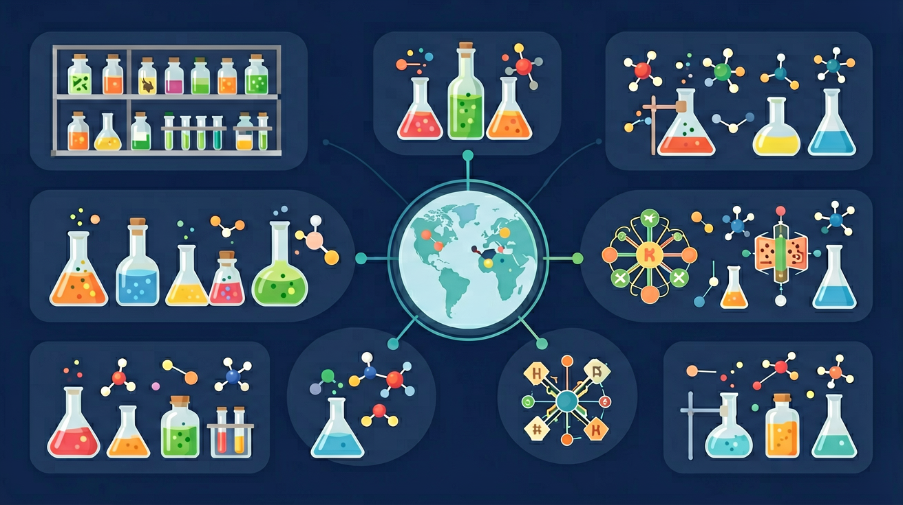

真实情境
实验室试剂柜整理记
化学实验室的试剂柜里，各种药品标签模糊、摆放杂乱。为了安全实验和提高效率，老师带领同学们对试剂进行分类整理。他们需要根据药品的物理状态、溶解性、酸碱性等性质，将它们分类摆放。
已有经验
学生已经了解物质的物理状态（固态、液态、气态），并初步接触过酸、碱、盐等概念。
真正卡点
在分类过程中，学生们容易混淆纯净物与混合物、有机物与无机物的区别。
本课任务
请根据物质的性质，将实验室试剂柜中的药品进行分类整理。
化学实验室的试剂柜里，各种药品标签模糊、摆放杂乱。为了安全实验和提高效率，老师带领同学们对试剂进行分类整理。他们需要根据药品的物理状态、溶解性、酸碱性等性质，将它们分类摆放。
学生已经了解物质的物理状态（固态、液态、气态），并初步接触过酸、碱、盐等概念。
在分类过程中，学生们容易混淆纯净物与混合物、有机物与无机物的区别。
请根据物质的性质，将实验室试剂柜中的药品进行分类整理。
纯净物由一种物质组成，混合物由多种物质组成。空气、溶液、合金通常是混合物；氧气、水、氯化钠是纯净物。纯净物再分为单质与化合物：单质由同种元素组成，化合物由不同元素组成。分类标准要一致：不要用“看起来干净”判断纯净物。
下列属于混合物的是？
拿到一瓶未知物质时，怎样用“组成—性质”两条线把它快速归类？
先选一个你关心的问题。后面的例子、提示和 AI 学伴都会围绕这个问题来帮你推进。
选择或输入后，本课会围绕你的问题展开。
理解物质分类的基本方法，掌握纯净物与混合物、单质与化合物的区别，能运用交叉分类法和树状分类法对常见物质进行分类
实验室中盐酸（HCl）既是酸又是电解质，而蔗糖溶液是混合物且属于非电解质，通过导电性实验可验证二者的性质差异
分类时先判断纯净物或混合物，再细分单质或化合物；对化合物可同时采用组成分类（氧化物/酸/碱/盐）和性质分类（电解质/非电解质）
学生常混淆单质（如O2）与化合物（如CO2）中的同种元素，或误将混合物（如空气）当作纯净物进行分类
课堂任务：请用“现象/文本/地图/实验数据 → 关键证据 → 学科解释 → 迁移应用”四步，重写一个关于「物质的分类：从混乱试剂柜到清晰化学地图」的新问题。
如果你能解释“拿到一瓶未知物质时，怎样用“组成—性质”两条线把它快速归类？”，这节课就真正过关了。
化合物可按组成与性质分为氧化物、酸、碱、盐等。氧化物是由两种元素组成且其一为氧的化合物。酸电离出的阳离子全部是 H⁺；碱电离出的阴离子全部是 OH⁻；盐由金属离子（或铵根）与酸根构成。先写化学式再归类，比背中文名更稳。
CaO 属于？
有些名称容易误导：如“纯净的空气”说法不严谨；“冰水混合物”仍是纯净物。分类练习时同时问：由几种物质/几种元素组成？在水中电离出什么离子？建立树状图：物质→混合物/纯净物→单质/化合物→氧化物/酸碱盐。
分类时最优先区分的第一刀通常是？
物质先分纯净物与混合物；纯净物分单质与化合物；化合物可按氧化物、酸、碱、盐等分类，也可按电解质/非电解质分类。交叉分类法和树状分类法帮助从不同角度认识物质。分类是建立化学知识网络的基础。
判断时先问是否只有一种物质，再问是否一种元素（单质）还是化合物，化合物再看阴阳离子或官能团。注意：同素异形体是单质；合金是混合物；酸式盐仍属盐。
常见误区：常见误区是把冰水当成混合物，或把同素异形体当成化合物。同素异形体是同种元素形成的不同单质。
下列属于纯净物的是？
本课任务：用原子构建器区分元素（单质原子）与不同元素组合的化合物观念，并整理一张“混合物/纯净物/单质/化合物”分类证据表。
写清自变量、因变量和至少两个保持不变的条件，避免同时改变多个因素后无法归因。
至少记录三组带单位的数据或三个可复查的现象，不用“变大了”“更明显”代替证据。
用本课公式、粒子模型或受力关系解释趋势，并指出结论成立所依赖的模型条件。
换一个参数或真实情境预测结果，再用仿真检验；若不一致，回查变量、单位和边界条件。

识别并写出本节核心定义、公式或分类标准。
把本课标准用于一个实验数据或真实生活场景。
设计一个反例，说明常见错误为什么站不住脚。
记忆锚点：分类口诀：先分纯混，再分单化；化合物里看氧酸碱盐。
易错提醒：常见错误：把“含氧元素的物质”都叫氧化物。硫酸 H₂SO₄ 含氧，但有三种元素，不是氧化物。
不要只看结论。动手改变变量后，再用一句话解释画面为什么变了。